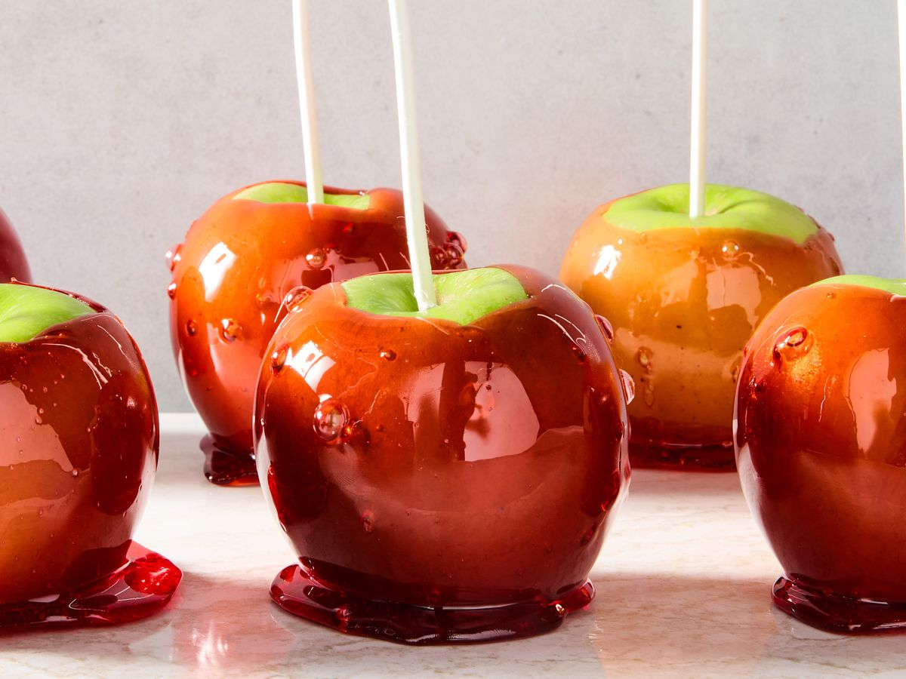

Glossy, red, and sweet, candied apples, also known as jelly apples, were invented in New Jersey in 1908, when William Kolb, a candy maker from Newark, made a syrup with melted sugar, red coloring agent, and cinnamon flavoring. He dipped some apples into the syrup and placed them on his shop's window display.
Meal prep time : 30 minutes
Servings : 8